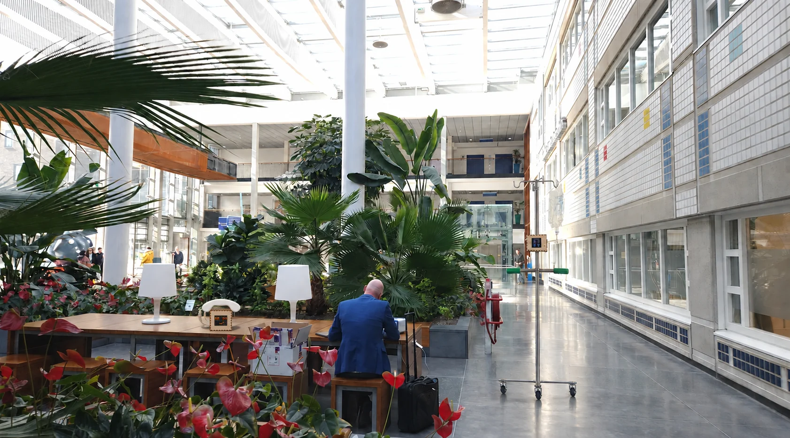
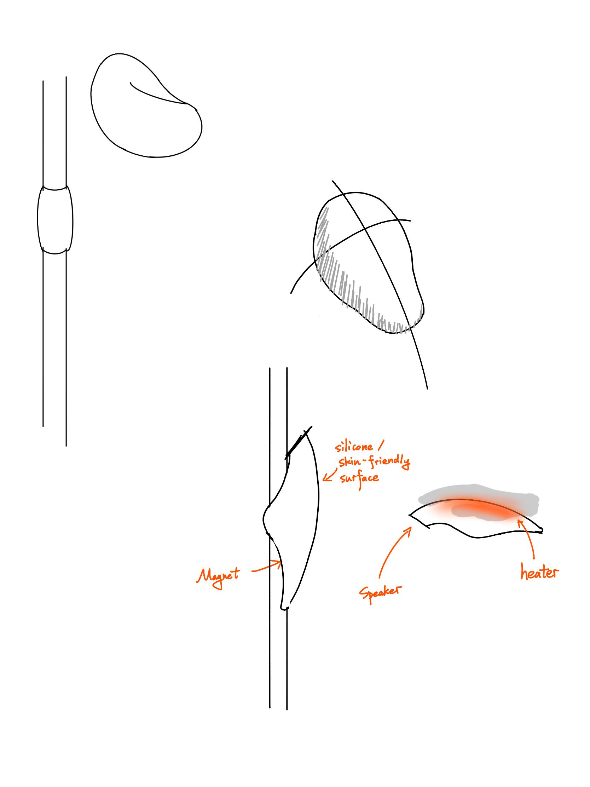
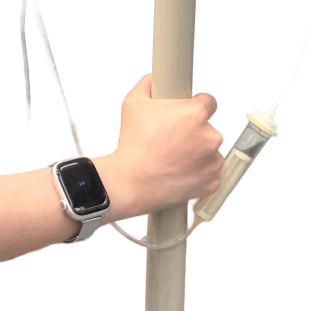
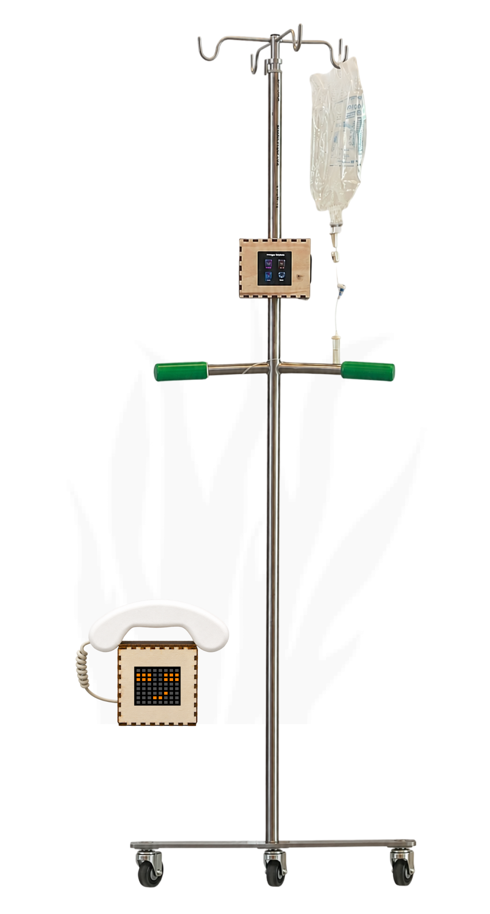
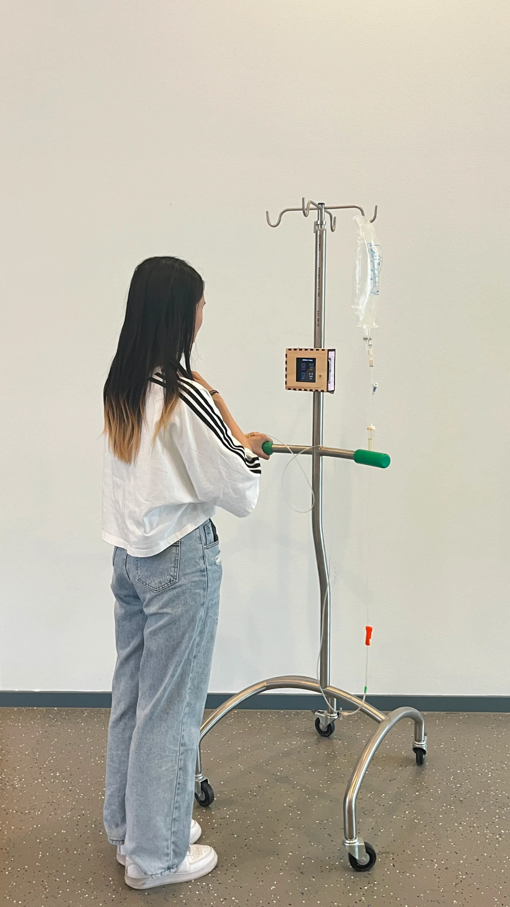
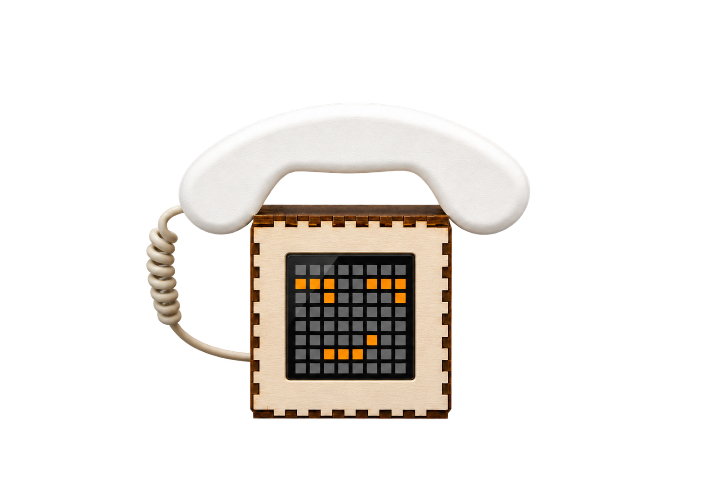
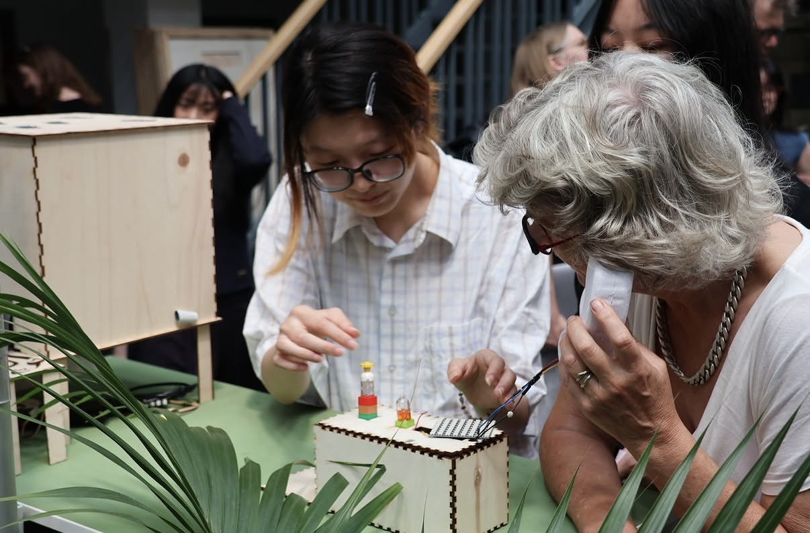

Whispering
Garden
Turning passive waiting into an active response.
Waiting is not
an empty moment.
Context & opportunity
During an infusion, a person is tethered to a chair, a line, and a schedule they cannot control. The physical constraint amplifies uncertainty and makes time feel strangely passive.
First-hand observation and patient conversations revealed familiar coping behaviors: looking at a phone, resting, or talking to someone nearby. Yet the needle, tubing, and IV pole continually pull attention back to treatment.
The hospital's planted atrium already offered light, greenery, and space to move. The opportunity was to make that environment respond gently to the person within it, without asking them to stare at another screen.
Target usersPeople living with recurring or long-duration IV treatment, especially those who attend alone.
Experience goalMake waiting time something a person can actively explore.
The need beneath
the waiting.
User research
Five in-depth interviews with long-term infusion patients shaped a four-stage emotional journey: before treatment, settling in, the long wait, and leaving.
The strongest signal was not simply boredom. Patients described three overlapping forms of loneliness: physical isolation, missing social feedback, and a deeper loss of agency. A small sense of choice could change how the wait was experienced.
Anticipation and uncertainty
"I was nervous before the needle went in."
Body and equipment take focus
"I felt a bit more in control when I adjusted my sitting position."
Loneliness and low agency peak
"Nobody explained what was next and the remaining time, so I felt a bit lost and anxious."
Relief mixed with uncertainty
"I feel like a burden asking the doctor if I'm done."
Anxious, lonely, unsettled
Cold and physically restricted
Unclear process and remaining time
Movement and one-handed activities constrained
Three layers of loneliness
Research synthesis → design dimensions
Cold, constrained, unable to move freely
WarmthLittle companionship or immediate response
VoiceFew meaningful choices during the wait
ChoiceWarmth was explored in early concepts. The working prototype focused on Voice and Choice; temperature was not implemented.
A garden that
answers back.
Interaction concept
Choose a voice theme, follow gentle cues into the garden, discover a listening point, and decide whether to listen or leave a message of your own.
Light and pixel expressions communicate a state from a distance. Voice makes the presence of another person tangible. Together, they give feedback without demanding continuous screen use or complex movement.
The concept evolved from a handheld device to a wearable cue and, finally, an IV-pole interface paired with a garden listening point. The final arrangement brought discovery and conversation into one place.
From object to place
Three iterations, one clearer interaction

Useful as comfort, but not strongly connected to the garden experience.

Checking the wrist added effort; separating audio from the garden confused participants.

The pole guides discovery; a single garden point holds the voice exchange.
- 01 / IV poleChoose
Select Comfort, Humor, Advice, or Daily.
- 02 / IV poleSeek
Emoji size and haptic intensity shift with distance.
- 03 / IV poleArrive
Color and a short pulse confirm the listening point.
- 04 / GardenListen
Lift the handset and hear a thread of voices.
- 05 / GardenRespond
Record a new message or reply to one you heard.


Built to respond
in the real world.
Hardware & interaction
The core proof is a working interaction loop: proximity sensing, pixel feedback, and voice playback responding within the same physical experience.

System architecture
Ultrasonic proximity sensing and physical input
State control and button-signal synchronization
Pixel-matrix expression and audio playback
Four voice themes
8 × 8 expressions from the original LED artwork
Interaction states
- 01Theme selected
Comfort · Humor · Advice · Daily
- 02Searching
Expression changes with distance
- 03Point found
Color confirms arrival
- 04Listening / recording
Garden-side expression reflects audio state
What it took to make it run
Two ESP32 boards split the load and synchronize through a button signal. LED power, DFPlayer communication, power-bank auto-shutdown, and wiring inside the wooden housing were all real integration constraints.
The pixel display made discovery feel playful, but its cues had to stay glanceable. The device should direct attention toward the garden, not hold it on a screen.
Inside the pixel display
The Arduino sketch maps an 8 × 8 LED matrix and two physical buttons to expression and listening states.
#include <Adafruit_NeoPixel.h>
#define LED_PIN 15
#define BUTTON_1 14
#define BUTTON_2 27
#define LED_COUNT 64
#define MATRIX_W 8
#define MATRIX_H 8
#define BRIGHTNESS 35
Adafruit_NeoPixel strip(LED_COUNT, LED_PIN, NEO_GRB + NEO_KHZ800);What worked.
What resisted.
Validation & iteration
Five participants with infusion experience completed the full interaction journey in a planted environment. The sessions focused on clarity, emotional resonance, and willingness to engage.
Selected a theme and found the listening point.
Listened to the full voice message.
Repeatedly adjusted the IV tubing while interacting.
Were hesitant to record their own message.
"The experience sparked curiosity. Humor was the most attractive theme."
"Haptic and visual feedback complemented each other: one was explicit, the other intuitive."
"Comfort and daily icons looked too similar; the white icon was too bright."
Keep
Choice generated more agency than passive content. The humor theme sparked curiosity, and visual and tactile cues complemented each other during discovery.
Change
Reduce the need to walk, hold the handset, or record. Test a seated, hands-free version; calibrate proximity feedback; make the theme symbols easier to distinguish.
A working device
is only the beginning.
Contribution & reflection
My contribution
- Led five patient interviews and translated the findings into the Warmth, Voice, and Choice framework.
- Defined the product direction, interaction sequence, and emotional feedback language.
- Led hardware selection, integration, and physical prototyping.
What I would change
- Validate the need for strict light–audio synchronization before committing to a two-controller architecture.
- Prototype a seated, hands-free listening point and evaluate it in a real infusion setting over a longer period.
Perspectives from the team
Different lenses on the next iteration
Sensory cues should work toward one experience, not compete for attention. The garden itself can become part of the interaction.
A precise interface is not necessarily a better experience. Ambient cues should return attention to the physical surroundings.
The concept became practical quickly; more playfulness and surprise could make it emotionally engaging without adding effort for patients.
Engineering made it work. Experience design still has to answer why someone would choose to engage.
Back to all projects